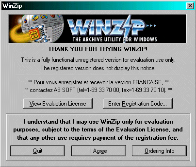
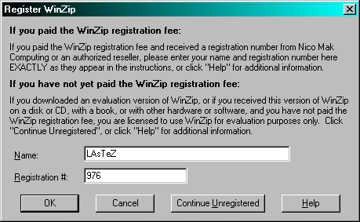
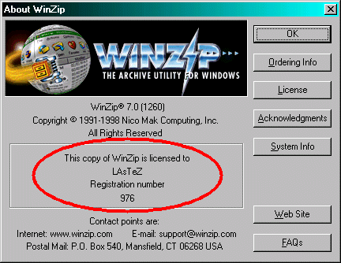

CRACK DE WINZIP 7
voyant que jufox fait du bon boulot pour le zine je me suis dis qu'il fallait que j'en fasse
autant. Voici donc un tut de cracking sur winzip 7.
C'est la version anglaise et c'est celle ou on a un nag au départ avec
agree ou quit.
Je précise ça car y a une version avec une barre qui défile et celle la je l'aie
pas. (si vous l'avez le crack devrait réssembler).
bon tout d'abord les outils :
softice (version > 2)
un éditeur hexa
Si vous les avez pas c'est pas bien dur de les trouver, allez sur www.crackstore.com
dans la rubrique outils et vous trouverez votre bonheur.
bon le crack.
Tout d'abord on tape ctrl+d
puis dans softice on tape :
data (pour la mémoire)
code on (pour voir l'hexa)
r (pour voir le registre. Il est par défaut sous si4)
puis ctrl+d pour resortir
On démarre le prog et on va dans enter registration code.

On rentre les infos (pour moi) :
LAsTeZ (mon second pseudo)
976 (marque de fringue)

Ceci nous servira juste a reperer l'endroit ou opérer
et avant de cliquer sur ok, on fait ctrl+d (softice apparait) et on place un breakpoint
bpx getdlgitemtexta
C'est un point d'arret qui break lors du passage en mémoire de chaines de caractères
(pour prendre le sérial et le nom par exemple)
Je vous précise que ce break marchera pas toujours selon le prog.
(si ça marche pas faites un bpx hmemcpy mais je vous expliquerais ça plus tard)
On appuie sur OK, bem softice apparait, on appuie sur F5 pour continuer
(car il y a 2 chaines a loader).
puis on fait F12 pour retourner au prog (on est dans les apis la).
vous etes dedans quand il y a marqué dans la barre en bas :
------------------------------- WINZIP32!.text+7036 ----------------------------
(le chiffre 7036 on s'en fout)
voila on va cracker sec maintenant.
On regarde ce qu'on a sous les yeux :
.......
CALL [USER32!getdlgitemtexta]
PUSH ESI
CALL 0029642
POP ECX
PUSH ESI
CALL 0042966B
CMP BYTE PTR [0047D918],00 <-test si on a rentré un nom
POP ECX
JZ 004080B2 <-ici
CMP BYTE PTR [0047D948],00 <-test si on a rentré un sérial
JZ 004080B2 <-ici
CALL 00407B4B
TEST EAX,EAX <-test si le code est OK
JZ 004080B2 <-ici
.........
ah ah de l'assembleur ! Bon vous voyez le JZ 004080B2 c'est un saut qui nous
envoie sur la boite de message nous disant qu'on a rentré un mauvais sérial.
3 trucs l'appelent. Si vous rentrez pas de nom, ou pas de sérial ou si le code
est mauvais. Pour voir qu'il teste le nom et le sérial placez vous a la souris
sur les CMP BYTE PTR [!!!!!!!!!],00 et cliquez avec le bouton droit puis choisissez
display, votre nom ou sérial s'affichera.
Rentrons dans le vif du sujet. On a donc un TEST EAX,EAX qui vérifie si le code
est bon. Le CALL au dessus est la procédure d'identification. Après cette procédure
si eax vaut 0 on saute (mauvais code), si il vaut 1 on saute pas (bon code).
On sait que eax doit valoir 1 a la sortie du call.
D'ailleurs ce meme call est utilisé après enregistrement pour vérifier notre
sérial. (et oui au départ du prog le sérial est vérifié).
Il suffit donc de cracker en faisant en sorte que eax valle toujours 1.
On va donc dans le call.Pour ça on recommence depuis le début. Puis on a appuie sur F10
plusieurs fois jusqu'a etre sur notre fameux call, et ici on tape F8, AH!! nous voila
dans les entrailles du call.On trace avec F10 jusqu'au ret (un ret fait revenir du call).
Voila mon écran de softice :
......
CALL 004560F0
MOV EAX ,[0047B06C] <- la le prog change eax
ADD ESP, 0C
POP EDI
POP ESI
POP EBX
LEAVE
RET
......
la ligne MOV EAX ,[0047B06C] met eax a 0 (car on a un mauvais code)
mais nous on veux 1.
On a qu'a remplacer cette ligne par :
MOV EAX , 00000001
et a la sortie du call eax vaudra 1.
Pour le changer on regarde l'hexa a coté de la ligne :
(vous devez avoir tapé code on sous softice)
c'est marqué :
A16CB04700
Tout d'abord on enlève nos breakpoints sous si :
tapez bc * pour les virez tous.
(bl pour en voir la liste et bc "numero" pour un virer un précis)
on prend donc notre éditeur hexa et on recherche ces octets.
puis on les change en :
B801000000 (MOV EAX,00000001)
On relance le prog et revoila le nag.
On rentre de nouveau nos infos (c'est normal que ce nag arrive car il a pas
de nom ni de sérial car on s'est pas encore enregistrés).
Puis ok.
On relance encore et la le prog est register a notre nom :

Pas mal hein ?
Voila, si vous avez des questions, ou autre chose contactez moi:
hccc@caramail.com
www.multimania.com/hccc
TiPiaX